Vision Transformer：把图像变成序列，把视觉先验交给数据
PAPER READINGS · MODEL ARCHITECTURE · COMPUTER VISION
一句话：ViT 将图像切成 patch，用共享线性层映射成 token，再交给标准 Transformer encoder；它证明了简单架构结合足够大的预训练数据，可以获得很强的视觉迁移能力。
Paper Metadata
| 字段 | 已核实信息 |
|---|---|
| 原标题 | An Image is Worth 16x16 Words: Transformers for Image Recognition at Scale |
| 作者 | Alexey Dosovitskiy、Lucas Beyer、Alexander Kolesnikov、Dirk Weissenborn、Xiaohua Zhai、Thomas Unterthiner、Mostafa Dehghani、Matthias Minderer、Georg Heigold、Sylvain Gelly、Jakob Uszkoreit、Neil Houlsby |
| 机构 | Google Research, Brain Team |
| Venue / 年份 | ICLR 2021；首次 arXiv 提交 2020-10-22 |
| 精读版本 | arXiv:2010.11929v2，2021-06-03，22 页 |
| DOI | 10.48550/arXiv.2010.11929（arXiv 标识） |
| 主源 | 指定 v2 PDF · arXiv 元数据 · 本地原文 |
| 官方实现 | google-research/vision_transformer，含 fine-tuning 与预训练权重；没有把公开代码等同于 JFT 全流程复现 |
| 阅读与更新 | 2026-10-29 |
适合已理解 Transformer、希望将其迁移到视觉或 VLM 的读者。正文遵循原论文顺序：Abstract → §1–5 → Appendix A–D.10，再给出工程判断和扩展调研。Paper 是原论文事实；Interpretation 是本文重构与计算；External 是其他论文或官方实现。本文没有进行 TPU 训练、GPU 推理或设备端复现，交互读数是解析计算或论文报告值。
Abstract / TL;DR：改变的是视觉建模的默认起点
一段话。过去的视觉注意力模型常在 CNN 框架中替换部分卷积，或设计局部、轴向等特殊 attention。ViT 把整张图切成不重叠 patch，保留 NLP 中成熟的 Pre-LN Transformer 结构。仅在 ImageNet 量级训练时，它的视觉归纳偏置较弱，原始训练配方下不如 ResNet；在 ImageNet-21k 或 JFT-300M 上预训练后，这个差距逆转。JFT ViT-H/14 达到 ImageNet 88.55%、CIFAR-100 94.55% 和 VTAB 77.63%，且论文的受控实验显示出较好的性能与计算量关系。这些证据支持“大数据能弥补弱视觉先验”，不能推出“任何数据规模下 Transformer 都胜过 CNN”。
五个关键点：
- Patch 是计算预算的开关。224×224、P=16 时只有 196 个图像 token；直接把每个像素当 token 则有 50,176 个，attention pair 数相差约 65,536 倍（忽略 CLS）。
- Encoder 是 Pre-LN。LN → attention → residual → LN → MLP → residual，全程维持相同宽度 D。
- 空间关系需要学习。共享 patch 投影、切块和高分辨率位置插值仍带有先验；“纯 Transformer”不意味着零视觉先验。
- 数据规模与训练配方必须一起看。原论文的小数据劣势不代表现代 ViT 在 ImageNet-only 训练中仍有同样差距。
- 迁移质量与设备效率是两个问题。TPUv3 峰值吞吐、预训练 FLOPs、batch=1 延迟和端侧物理内存不能混用。
1. Introduction：为什么不先设计更复杂的视觉 attention？
Paper · §1。NLP 的 Transformer 随模型和数据扩展取得进展，而视觉仍主要依靠 ResNet。作者希望直接复用标准 Transformer 与成熟实现，避免特殊 attention pattern 在加速器上效率不足的工程困难。
What / Why。核心问题不是“attention 能不能处理图像”，此前已经能；问题是：不用深层卷积、不手工设计局部 attention，一个简单序列模型能否在实际图像分辨率上成为有竞争力的视觉表示学习器？
How / Evidence。切块降低序列长度，大规模监督预训练提供视觉关系学习信号，随后在多个下游分类任务上迁移。本文最重要的证据是模型 × 数据 × 算力的系统比较，而非某个新 attention 公式。
Interpretation。可复用的矩阵运算比理论上更“视觉专用”的操作更容易形成规模效应。不过实验的“更少预训练资源”同时受到训练轮数、优化器、正则化与实现影响，不能全归因于架构。
2. Related Work：ViT 的新意在哪里？
Paper · §2。Image Transformer 使用局部 attention；Sparse Transformer、block attention 和 axial attention 限制连接以控制像素级的平方复杂度。另一条路线在 CNN 特征图后加 attention，例如 DETR。iGPT 降低分辨率和颜色空间后做像素级生成式预训练。
与 ViT 最接近的是 Cordonnier 等人的 ICLR 2020 工作：2×2 patch 加全局 attention。作者明确承认该关联。因此，不能把“切 patch + Transformer”说成完全首次提出。ViT 的贡献在于更现实的 patch 粒度、标准架构和大规模预训练实验，使该路线真正扩展到中等分辨率图像和强迁移结果。
背景关系。BERT 提供 encoder 与 CLS 的范式；BiT 提供大规模监督视觉迁移的强 CNN 基线；ViT 将两条路线接起来。后文的 DeiT、MAE、CLIP、DINO 等属于后续研究，不是原论文已完成的成果。
3. Method：从图像到一条可执行的数据流
3.1 Vision Transformer：patch projection、CLS 与 Pre-LN
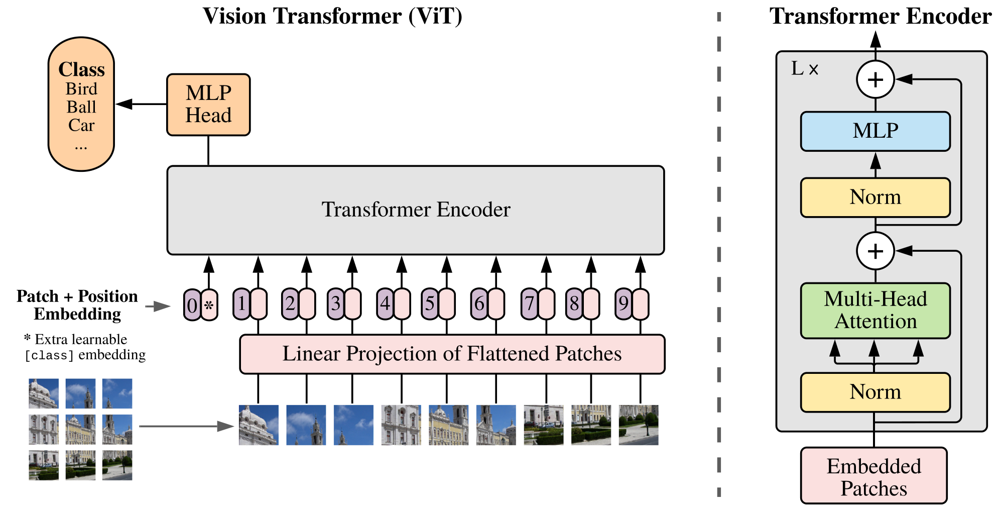
Source: ViT v2 · author-provided figure PDFs; all panels and legends retained. Caption outside image. Click to zoom.
这张图解决什么问题？Figure 1 把图像输入与标准 encoder 的接口画清楚。先读左侧图像与切块，再读序列顶部的分类 head，最后看右侧重复 L 次的 block。
Components / Data flow。每个 patch 展平后通过同一个线性投影；编号 0 是可学习 CLS，1–9 是示意 patch；位置向量逐 token 相加。右侧两次 Norm 都位于子层之前，残差箭头绕过 attention 和 MLP。图中的 9 个 patch 只用于示意，不是实际实验的固定 token 数。
关键观察。没有逐层下采样，也没有 decoder。图像中远距离 patch 从第一层起就可交换信息；CLS 通过 attention 聚合全图，而不是把所有 patch 先求均值。
Equation 1：切块与线性嵌入
Copyable LaTeX
z_0=[x_{\mathrm{class}};x_p^1E;x_p^2E;\ldots;x_p^NE]+E_{\mathrm{pos}},\quad E\in\mathbb{R}^{(P^2C)\times D},\ E_{\mathrm{pos}}\in\mathbb{R}^{(N+1)\times D}Paper · Eq.1。原图 x∈R^(H×W×C)，patch 矩阵 x_p∈R^(N×P²C)，N=HW/P²。E 对所有 patch 共享；分号表示沿 token 轴拼接，E_pos 为每个序列位置提供 D 维可学习向量。
Shape。加上 batch B：图像 [B,H,W,C] → patch [B,N,P²C] → projection [B,N,D] → 拼 CLS [B,N+1,D] → 位置相加 [B,N+1,D]。CLS 参数 [1,1,D] 沿 batch 复制，不是给每个图像类别分配一个 token。
Toy example。224×224 RGB、P=16、ViT-B：14×14=196 个 patch，每块 768 个标量，E 为 768×768，拼 CLS 后为 [B,197,768]。这里投影没有降低单 patch 维度；原文 §4.5 泛称“lower-dimensional space”更适合 ViT-L/32（3072→1024），不能套到所有变体。ViT-H/14 的单块 588→1280 反而扩维。
工程含义。不必真实 materialize im2col。kernel=P、stride=P 的共享 Conv2D 与不重叠 patch flatten + linear 在相同权重布局下等价，官方实现就采用这种投影。切块尺寸会影响细小文字信息，也影响 token 数；它不是可以无损任意调大的压缩率。
Patch grid：边长变小，序列怎样变长？
示意固定 224×224 输入的切块。可切换 P 并选择一个 patch；网格颜色只表示位置，没有表示论文的 learned attention 或真实图像。
Equations 2–4：两条残差与最终表示
Copyable LaTeX
z'_\ell=\mathrm{MSA}(\mathrm{LN}(z_{\ell-1}))+z_{\ell-1},\quad \ell=1,\ldots,LCopyable LaTeX
z_\ell=\mathrm{MLP}(\mathrm{LN}(z'_\ell))+z'_\ell,\quad \ell=1,\ldots,LCopyable LaTeX
y=\mathrm{LN}(z_L^0)Paper · Eqs.2–4。所有中间 z 为 [B,N+1,D]。MLP 在每个 token 上独立执行 D→D_MLP→D，以 GELU 连接；参数在所有位置共享。它混合通道，不直接混合 token。LN 归一化最后的 D 维，而不是跨图像或跨 token 统计。
Interpretation。Pre-LN 保留残差主路径，便于深层优化；不是把原始 2017 Transformer 的 Post-LN 原封不动搬过来。输出 y 是最终 CLS [B,D]；完整 encoder 实现可先归一化所有 token，再取 CLS，结果在这一位置等价。
预训练分类 head 为带一个隐藏层的 MLP，Appendix D.3 指明隐藏激活为 tanh；微调换成单线性 head。这里有两种 MLP：encoder 内的是 GELU，分类 head 内的是 tanh，不要混淆。
Inductive bias：弱先验，不是没有先验
CNN 将局部邻域、平移等变、二维拓扑与多层级结构写进每层。ViT 的全局 attention 不强制局部连接，空间关系主要通过训练形成。但它仍使用固定方形切块、共享投影和位置向量，高分辨率迁移还按二维网格插值。
原文称 MLP 局部且平移等变，指的是逐 token 共享变换这一层面。含绝对位置向量与固定切块边界的整套模型，不保证像素级平移等变。移动一个像素会改变 patch 的内容划分。
Hybrid。可以先用 CNN 提取特征图，然后在特征图上切块投影，甚至用 1×1 feature patch。序列接口不变，但引入了卷积先验和额外成本。论文把 hybrid 的末尾 /16、/32 用作 CNN 总下采样率，不是原始像素 patch 尺寸。
3.2 Fine-tuning and Higher Resolution：位置表也要一起迁移
Paper。移除完整预训练 head，接上零初始化 D×K 线性分类层，K 是目标任务类别数。提升输入分辨率时保持 P 不变，于是 token 数增加。encoder 权重仍适用，位置表长度却不再匹配。
过程。单独保留 CLS 的位置向量；把图像位置表 [N,D] 还原为 [H/P,W/P,D]；在两个空间轴插值到新网格，再展平成新位置序列，最后拼回 CLS。
例子。ViT-B/16 从 224 到 384：位置网格 14×14→24×24，图像 token 196→576，CLS 后 197→577。Table 2 的 ViT-L/16 在 512 微调，网格 32×32；ViT-H/14 在 518 微调，网格 37×37，因此不是随意选一个分辨率数字。
原论文只写二维插值，没有指定所有实现都用 bicubic。当前官方 JAX checkpoint.py 的 scipy.ndimage.zoom(..., order=1) 是线性插值；别把其他框架的默认 bicubic 反写成本文事实。方形网格实现通过平方根恢复网格，不直接支持任意长宽比；矩形输入需显式携带旧、新网格形状。
Position table：只插值空间网格
左侧为 14×14 的一个假设位置通道，右侧按线性插值映射到新网格。可以切换目标网格；颜色是合成标量，不是从 ViT 权重提取的 embedding。CLS 始终独立保留。
4. Experiments：数据、预算与迁移协议
4.1 Setup：比较的对象和指标
Paper。预训练数据有 ImageNet（约 1.3M 图、1k 类）、ImageNet-21k（约 14M 图、21k 类）和 JFT（303M 图、18k 类）。作者按 BiT 的流程移除与下游测试集重复的预训练图。JFT 私有，公开权重不消除数据不可复现的问题。
下游包括 ImageNet、ImageNet ReaL、CIFAR-10/100、Pets、Flowers，以及 VTAB-1k 的 19 项任务。VTAB 每任务仅 1,000 个训练样本；分为 Natural 7 项、Specialized 4 项、Structured 8 项。
| Model | Layers | Hidden size D | MLP size | Heads | Params |
|---|---|---|---|---|---|
| ViT-Base | 12 | 768 | 3072 | 12 | 86M |
| ViT-Large | 24 | 1024 | 4096 | 16 | 307M |
| ViT-Huge | 32 | 1280 | 5120 | 16 | 632M |
Original Table 1 — Details of Vision Transformer model variants.
Table 1 如何读。L 是 block 数、D 是隐藏宽度、Heads 是注意力头数；B 和 L 的单头维度为 64，H 为 80。86M/307M/632M 是论文约数，不能不指定 patch、head 与位置表就声称是精确参数量。主体每 block 大约 12D² 参数，整体主干大约 12LD²；分类 head 与 patch 投影另算。
训练。预训练统一用 Adam，β₁=.9、β₂=.999、batch=4096；不同数据集的 weight decay、dropout 和 LR schedule 并不完全一样，完整设定在 Table 3。微调用 SGD momentum=.9，batch=512。论文没有完整列出所有实验的数值精度；不能把本文解析的 BF16 内存账单称为原实验精度。
指标。Fine-tuning accuracy 是端到端更新模型后的正确分类率；few-shot accuracy 则冻结表示，用少量样本拟合有正则的最小二乘分类器，目标为 {-1,1}^K。两者测量不同能力，不能按同一种 accuracy 排榜。
Interpretation · few-shot 重构。令 F∈R^(m×D)、T∈R^(m×K)，则 ridge 解 W=(FᵀF+λI)^(-1)FᵀT；实际应求解线性系统而非显式求逆。5-shot 通常指每类 5 个标签例子，并非整个 ImageNet 只用 5 张图。这里的公式用于解释原文的 closed-form，不是新增论文编号公式。
TP、FP、TN、FN、Precision、Recall、F1 需要预测或逐类计数。ViT 原论文主要提供 aggregate accuracy，没有这些统计，本精读不从 accuracy 反推混淆矩阵。
4.2 Comparison to State of the Art：结果很强，归因要克制
| Ours-JFT (ViT-H/14) | Ours-JFT (ViT-L/16) | Ours-I21k (ViT-L/16) | BiT-L (ResNet152x4) | Noisy Student (EfficientNet-L2) | |
|---|---|---|---|---|---|
| ImageNet | 88.55 ± 0.04 | 87.76 ± 0.03 | 85.30 ± 0.02 | 87.54 ± 0.02 | 88.4/88.5^* |
| ImageNet ReaL | 90.72 ± 0.05 | 90.54 ± 0.03 | 88.62 ± 0.05 | 90.54 | 90.55 |
| CIFAR-10 | 99.50 ± 0.06 | 99.42 ± 0.03 | 99.15 ± 0.03 | 99.37 ± 0.06 | - |
| CIFAR-100 | 94.55 ± 0.04 | 93.90 ± 0.05 | 93.25 ± 0.05 | 93.51 ± 0.08 | - |
| Oxford-IIIT Pets | 97.56 ± 0.03 | 97.32 ± 0.11 | 94.67 ± 0.15 | 96.62 ± 0.23 | - |
| Oxford Flowers-102 | 99.68 ± 0.02 | 99.74 ± 0.00 | 99.61 ± 0.02 | 99.63 ± 0.03 | - |
| VTAB (19 tasks) | 77.63 ± 0.23 | 76.28 ± 0.46 | 72.72 ± 0.21 | 76.29 ± 1.70 | - |
| TPUv3-core-days | 2.5k | 0.68k | 0.23k | 9.9k | 12.3k |
Original Table 2 — Comparison with state of the art on popular image classification benchmarks. We report mean and standard deviation of the accuracies, averaged over three fine-tuning runs. Vision Transformer models pre-trained on the JFT-300M dataset outperform ResNet-based baselines on all datasets, while taking substantially less computational resources to pre-train. ViT pre-trained on the smaller public ImageNet-21k dataset performs well too. ^*Slightly improved 88.5% result reported in Touvron et al. (2020).
完整比较。表中 accuracy 为百分数，越高越好，均值 ± 标准差来自三次微调；TPUv3-core-days 越低越好，等于核心数乘训练天数，每个 TPUv3 chip 有两个 core。Noisy Student 的缺失任务仍保留“−”；88.4/88.5* 的脚注表示后来 FixEfficientNet 稍改进的结果，不是两个独立随机种子。
重新算账。ViT-H/14 对 BiT-L：ImageNet +1.01 个百分点，相对 accuracy +1.15%，错误率从 12.46% 降到 11.45%，相对错误下降约 8.11%；CIFAR-100 +1.04 个百分点；VTAB +1.34 个百分点。预训练 core-days 9.9k/2.5k=3.96 倍之比。ViT-L/16 的 0.68k 相比 9.9k 是 14.56 倍之比，但这不是同精度、同架构、同 schedule 的纯架构 speedup。
原文核查。正文说 JFT ViT-L/16 在所有任务超过 BiT-L，表中却有两个例外：ImageNet ReaL 为 90.54 对 90.54，VTAB 为 76.28 对 76.29。应读作“多数任务更高，若干任务接近”。H/14 在这些表列 accuracy 上均高于 BiT；Flowers 则 L/16 的 99.74 还高于 H/14 的 99.68，规模收益并非每任务单调。
公平性。BiT 同样利用 JFT，但训练设定和规模不同；Noisy Student 是半监督训练，JFT 标签使用方式不同。Table 2 回答的是当时已发表系统的结果与预训练成本，§4.4 更接近控制数据与优化环境的架构比较。表中成本不覆盖所有开发搜索与每个下游微调，不是项目总能耗。
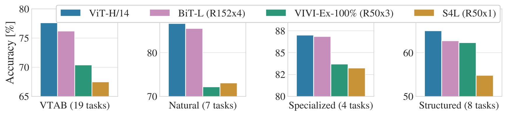
Source: ViT v2 · author-provided figure PDFs; all panels and legends retained. Caption outside image. Click to zoom.
Figure 2 如何读。四组柱分别为全部 VTAB、Natural、Specialized、Structured；各小图 y 轴范围不同，不能通过柱子视觉高度跨组比较。ViT-H/14、BiT-L、VIVI 与 S4L 的颜色在图例中对应。
关键观察与意义。ViT 在 Natural 与 Structured 领先；Specialized 与 BiT 接近。总平均提高并不意味着所有医疗、遥感或几何任务都提高，也不能用总体均值替代 D.10 的逐任务检查。
4.3 Pre-training Data Requirements：把“更大”拆成数据与模型
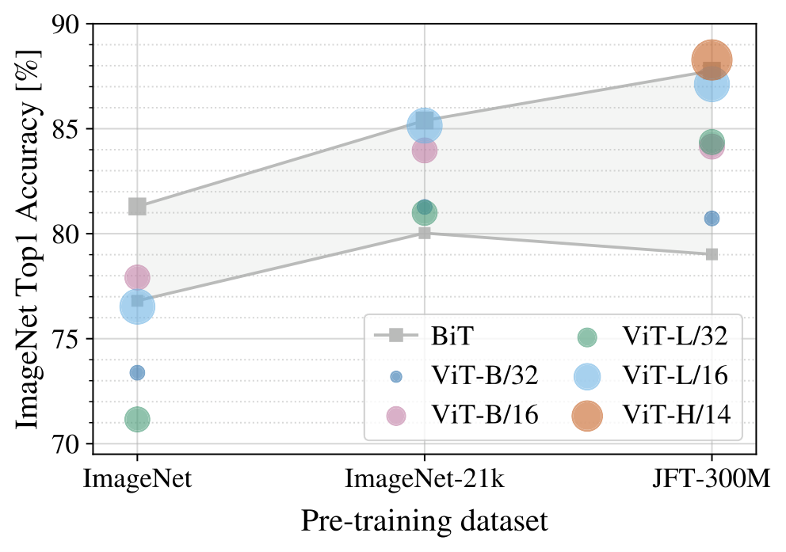
Source: ViT v2 · author-provided figure PDFs; all panels and legends retained. Caption outside image. Click to zoom.
Figure 3 的问题。同样迁移到 ImageNet，预训练来源从 ImageNet→I21k→JFT 时，模型大小的收益如何改变？横轴是三个离散数据源，不是等间隔数据量的连续曲线；阴影是不同大小 BiT 的范围。
读数与解释。ImageNet-only 的 L/16 比 B/16 弱，JFT 下则反超。Table 5：前者 76.53 对 77.91，差 −1.38 pp；后者 87.12 对 84.15，差 +2.97 pp。大模型的学习容量需要数据和优化支撑，而不是参数一多就一定更准。
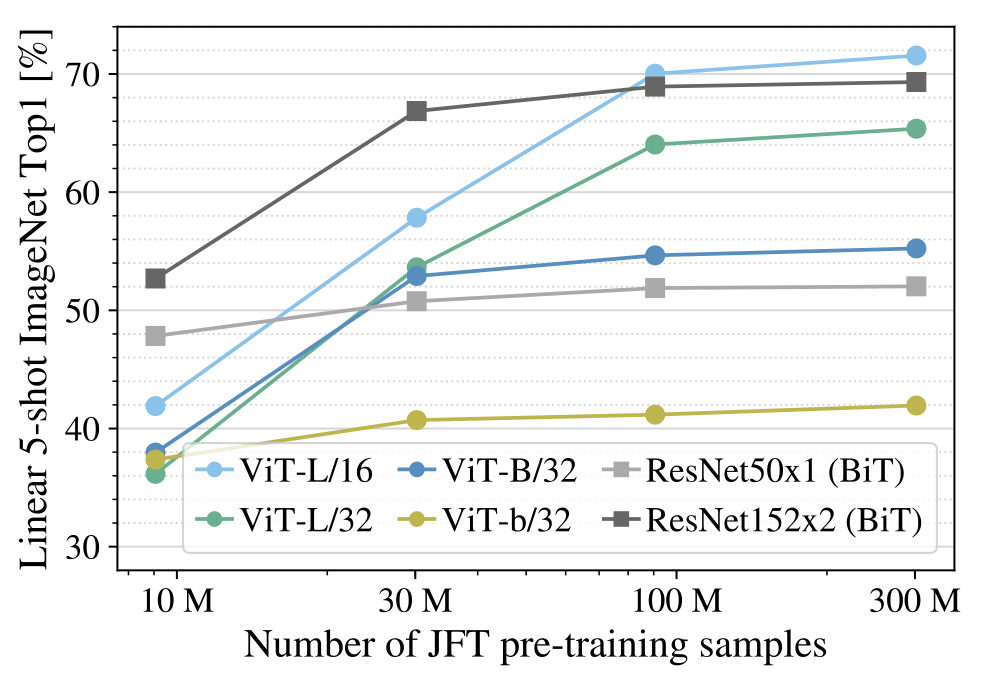
Source: ViT v2 · author-provided figure PDFs; all panels and legends retained. Caption outside image. Click to zoom.
Figure 4 的问题。换数据源还会改内容分布；这里固定 JFT，抽取 9M、30M、90M 和全量数据。纵轴是 ImageNet 5-shot linear accuracy，非完整微调；ViT-b/32 表示 B 的隐藏维度全部减半。
控制与边界。子集不额外调正则，用相同超参数，允许 early stopping 并取最佳 validation。小样本区间 ResNet 较好，大数据区间 ViT 更有优势。这支持数据依赖，但选最佳 checkpoint 和固定正则并不等于穷尽各模型在每个规模的最优训练配方。
4.4 Scaling Study：数据充足时，怎样花预算？
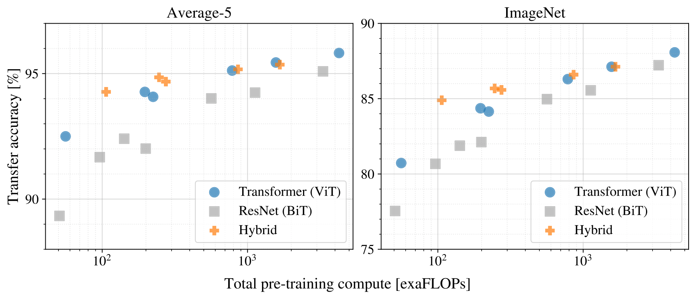
Source: ViT v2 · author-provided figure PDFs; all panels and legends retained. Caption outside image. Click to zoom.
Figure 5 如何读。横轴是总预训练 compute，纵轴是迁移 accuracy，各面板对应平均或单个数据集。点包含 7 个 ResNet、6 个 ViT 和 5 个 hybrid，训练为 7 或 14 个 epoch；沿一条路线连接的点不代表同一个模型连续训练。
观察。作者报告平均五个任务达到近似质量时，ViT 用约 2–4 倍更少 compute；hybrid 在小预算有优势，大预算优势消退。Table 6 保留精确值，不能从曲线再造一个未报告的统一 speedup。
Interpretation。ViT-B/32 与 ResNet50x1 的预算 55 对 50 exaFLOPs，ImageNet 80.73 对 77.54；ViT-L/16 14 epoch 与 ResNet200x3 14 epoch 为 1567 对 3306 exaFLOPs，ImageNet 87.12 对 87.22，接近质量时成本比约 2.11。后一个 CNN 单项仍略高，因此“ViT dominate”适合整体 frontier 解读，不是每个点逐项严格胜过。
4.5 Inspecting Vision Transformer：模型到底学到了什么？
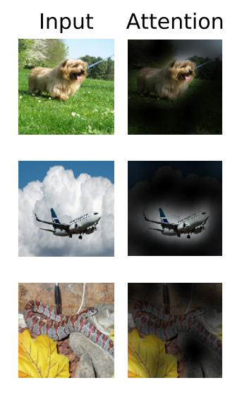
Source: ViT v2 · author-provided figure PDFs; all panels and legends retained. Caption outside image. Click to zoom.
Figure 6 如何读。每行左边是输入、右边是输出 token 对输入的 attention rollout。它支持模型在这些示例中关注与分类相关的物体区域。
边界。这是多层 attention 传播的可视化，不是最后一层单头 attention，更不是像素级因果贡献。头平均忽略头之间差异，MLP 与 value 变换也未在热图中完整体现。
原文交叉引用。Figure 6 caption 指向 D.7，但 attention rollout 的生成说明实际位于 D.8；D.7 讨论 attention distance。保留原 caption，并按真实章节定位解释。

Source: ViT v2 · author-provided figure PDFs; all panels and legends retained. Caption outside image. Click to zoom.
Figure 7 三部分。左边是 ViT-L/32 patch 投影滤波器的主成分，不是每个 learned filter 的原样展览；中间按查询 patch 的行列排列 cosine similarity 小图；右边每点代表一个 head 在一层的平均 attention distance。
数据流与观察。局部像素首先被投影，中间的位置表学出邻近、行列结构，attention 中既有早期局部 head，也有早期全局 head；后层关注距离通常更大。二维结构可从训练中形成。
Caveat。原正文在讨论 hybrid 的低层局部 attention 时仍引用 Figure 7 右图，而更完整的 ViT/hybrid 对照应结合 Figure 11。attention distance 是加权平均距离，不是完整 receptive field，也没有证明全局连接对每次预测都必要。
4.6 Self-supervision：初步结果没有完成后来的 MAE 路线
Paper。ViT-B/16 做 masked patch prediction，ImageNet 微调达到 79.9%，作者描述为比从头训练约高 2 pp、比监督预训练约低 4 pp。这里的“2% / 4%”按 accuracy 差读，不是相对百分比变化。
模型仍编码完整序列；50% patch 被选为预测目标，在被选的集合内按 80/10/10 替换为 mask、随机 patch 或保留原状。最终目标是每个 RGB 通道 3 bit 的均值颜色，总共 8³=512 类，不是整个 RGB 合计 3 bit。
意义。论文已经指出图像自监督潜力，但没有采用 MAE 的“仅编码可见 patch + 轻量 decoder”，不能把后续高效 masked pretraining 的成就记到本版本。
5. Conclusion：成立的结论与未解决的任务
Paper。标准 Transformer 在大数据监督预训练下可匹敌或超过强 CNN，并有良好的计算与迁移表现。作者将检测、分割、自监督与继续扩大规模列为后续方向。
Interpretation。论文最大的改变是为视觉模型建立了一条简单、稳定、可扩展的架构接口。它没有证明分类 CLS 能直接替代密集预测头，没有给出 OCR/VLM 端到端效果，也没有证明仅凭大数据可以忽视预处理、任务目标与硬件约束。
Appendix A：Multihead Self-attention 的完整数学接口
原附录将序列长度写为 N；正文 N 指图像 patch 数。为避免少算 CLS，本文工程计算用 S=N+1，公式保留原始写法。
Copyable LaTeX
[q,k,v]=zU_{qkv},\quad U_{qkv}\in\mathbb{R}^{D\times3D_h}Copyable LaTeX
A=\mathrm{softmax}(qk^\top/\sqrt{D_h}),\quad A\in\mathbb{R}^{N\times N}Copyable LaTeX
\mathrm{SA}(z)=AvCopyable LaTeX
\mathrm{MSA}(z)=[\mathrm{SA}_1(z);\mathrm{SA}_2(z);\ldots;\mathrm{SA}_k(z)]U_{\mathrm{msa}},\quad U_{\mathrm{msa}}\in\mathbb{R}^{kD_h\times D}Eqs.5–8 逐步重构。单头投影 [B,S,D]→三个 [B,S,D_h]；QKᵀ 生成 [B,S,S]，按每个 query 的 key 轴 softmax；AV 返回 [B,S,D_h]；k 个 head 沿通道拼接为 [B,S,kD_h]，输出投影回 [B,S,D]。批量实现可把全部 QKV 融合成 D×3D 权重。
数学直觉。QKᵀ 决定内容相关的连接权，1/√D_h 缩放控制 logit 的方差，softmax 保证一行权重和为 1；AV 在信息来源 token 之间加权汇总。多头允许不同关系，参数量在固定 D、D_h=D/k 时基本不随 head 数变化，但 attention map 元素数随 head 数增加。
Mask。这是双向全局 encoder attention，包括 CLS↔patch 与 patch↔patch，没有自回归 causal mask。所有图像 token 同时输入，不存在逐个 patch decode。
Interpretation：per-op 算账与分辨率四次项
下表按 batch=1、S=N+1、MLP ratio=4、一个 MAC 计 2 FLOPs，忽略 bias、LN、激活与 softmax 的少量算术，列出一个 block 的主要矩阵成本。
| 算子 | 权重 / 输出形状 | 主要 FLOPs | 关键成本 |
|---|---|---|---|
| QKV projection | D×3D → [S,3D] | 6SD² | 权重与输出读写 |
| QKᵀ | [k,S,D/k] → [k,S,S] | 2S²D | 平方的 pair 数 |
| softmax | [k,S,S] | O(kS²) | exp / reduction，显式 map 的读写 |
| AV | [k,S,S]×[k,S,D/k] | 2S²D | map 和 V 的读写 |
| output projection | D×D → [S,D] | 2SD² | 通道混合 |
| FFN 两层 | D×4D、4D×D | 16SD² | 中间 [S,4D] 激活 |
| 两次 LN + residual | [S,D] | O(SD) | 多次遍历与归约，可能受带宽约束 |
总量。一个 block 约 24SD²+4S²D FLOPs，全 encoder 乘 L，patch projection 另加 2NP²CD。attention core 占主矩阵 FLOPs 的比例为 S/(6D+S)，只有 S≈6D 时才与所有线性层总成本相等。因此“attention 有平方复杂度”不意味着常规图像分辨率下它已经占据全部计算。
ViT-B/16 的具体数。224：S=197，约 34.895 GFLOPs/encoder（加 patch projection 约 35.126）；384：S=577，约 110.288 GFLOPs/encoder（加 patch projection 约 110.967）。224→384 的 token 比约 2.93、attention pair 比约 8.58，而 encoder 主矩阵总量约 3.161 倍，不能把整个模型说成增长了 8.58 倍。边长放大 r 时 N∝r²，attention core∝r⁴，线性层∝r²。
内存。BF16/FP16 一个 [k,S,S] map 占 2kS² bytes：B/16、224 时约 0.888 MiB，384 时约 7.620 MiB，512 时约 24.047 MiB，都是每层、每图、单份 map。训练会额外保存激活、梯度与优化器状态，推理可复用 buffer；不能乘 L 后就称为真实推理峰值。FlashAttention 等 exact attention kernel 可避免显式保存完整 map，但不减少 attention pair 的数学关系。
Resolution cost：attention 的平方项何时占主导？
调整模型、分辨率、patch 和 batch。读数只统计本文列出的主要矩阵 FLOPs 和一份显式 attention map；不含训练反传、完整峰值内存、softmax/LN、预处理或设备延迟。
只接受可整除的方形网格；无 padding。Attention map 按 2 bytes/element；权重按原表参数约数，不计训练 optimizer。
KV cache。原始 ViT 不是自回归 decoder，通常无需跨生成步骤保存 image encoder 的 KV。VLM 中视觉 token 送入语言 decoder 后会增加 decoder prefill 和 KV；若使用 cross-attention，视觉 K/V 又可能缓存。应分别统计 image encoder 激活、projector 输出、语言模型缓存，而不是把三者都称为“ViT KV cache”。
Appendix B：Experiment Details 的训练与评测复核
B.1 Training：正文的统一设置有数据集例外
| Models | Dataset | Epochs | Base LR | LR decay | Weight decay | Dropout |
|---|---|---|---|---|---|---|
| ViT-B/{16,32} | JFT-300M | 7 | 8 · 10^-4 | linear | 0.1 | 0.0 |
| ViT-L/32 | JFT-300M | 7 | 6 · 10^-4 | linear | 0.1 | 0.0 |
| ViT-L/16 | JFT-300M | 7/14 | 4 · 10^-4 | linear | 0.1 | 0.0 |
| ViT-H/14 | JFT-300M | 14 | 3 · 10^-4 | linear | 0.1 | 0.0 |
| R50x{1,2} | JFT-300M | 7 | 10^-3 | linear | 0.1 | 0.0 |
| R101x1 | JFT-300M | 7 | 8 · 10^-4 | linear | 0.1 | 0.0 |
| R152x{1,2} | JFT-300M | 7 | 6 · 10^-4 | linear | 0.1 | 0.0 |
| R50+ViT-B/{16,32} | JFT-300M | 7 | 8 · 10^-4 | linear | 0.1 | 0.0 |
| R50+ViT-L/32 | JFT-300M | 7 | 2 · 10^-4 | linear | 0.1 | 0.0 |
| R50+ViT-L/16 | JFT-300M | 7/14 | 4 · 10^-4 | linear | 0.1 | 0.0 |
| ViT-B/{16,32} | ImageNet-21k | 90 | 10^-3 | linear | 0.03 | 0.1 |
| ViT-L/{16,32} | ImageNet-21k | 30/90 | 10^-3 | linear | 0.03 | 0.1 |
| ViT-* | ImageNet | 300 | 3 · 10^-3 | cosine | 0.3 | 0.1 |
Original Table 3 — Hyperparameters for training. All models are trained with a batch size of 4096 and learning rate warmup of 10k steps. For ImageNet we found it beneficial to additionally apply gradient clipping at global norm 1. Training resolution is 224.
Table 3。全部训练分辨率 224、batch=4096、warmup 10k steps；JFT 默认 linear decay、WD=.1、dropout=0，I21k 为 WD=.03、dropout=.1，ImageNet-only 300 epoch 则 cosine decay、WD=.3、dropout=.1，并额外 global norm=1 clipping。不要把“所有模型 WD=.1”从正文摘要延伸到所有数据源。
JFT 7/14 epoch 对应约 2.121B/4.242B image presentations（303M×epoch，忽略末批与去重差异），不是互不重复的图像数，也不是 NLP token 数。P=16 时每图 196 patch；以 patch presentations 计还需乘 patch 数。
Dropout。原文描述在 dense 层后使用（QKV projection 除外），以及位置与 patch embedding 相加后使用。这里不能自行补上现代训练的 Mixup、CutMix 或 stochastic depth 后称为原配方。
B.1.1 Fine-tuning：换完整 head，并独立选择学习率
| Dataset | Steps | Base LR |
|---|---|---|
| ImageNet | 20000 | {0.003, 0.01, 0.03, 0.06} |
| CIFAR100 | 10000 | {0.001, 0.003, 0.01, 0.03} |
| CIFAR10 | 10000 | {0.001, 0.003, 0.01, 0.03} |
| Oxford-IIIT Pets | 500 | {0.001, 0.003, 0.01, 0.03} |
| Oxford Flowers-102 | 500 | {0.001, 0.003, 0.01, 0.03} |
| VTAB (19 tasks) | 2500 | 0.01 |
Original Table 4 — Hyperparameters for fine-tuning. All models are fine-tuned with cosine learning rate decay, a batch size of 512, no weight decay, and grad clipping at global norm 1. If not mentioned otherwise, fine-tuning resolution is 384.
Table 4。cosine LR、batch=512、无 weight decay、global norm clipping=1，除特别说明外分辨率为 384。开发集分别留出 Pets/Flowers 10%、CIFAR 2%、ImageNet 1%，挑 LR 后在完整训练集更新并评估测试集。
协议核查。原附录文字说 ResNet/hybrid 的 ImageNet sweep 额外加入 .06，但 Table 4 的 ImageNet 列本身已经列 .06。保留原表并提示表述不够明确，不能擅自判定每类模型究竟少跑哪一档。ResNet 还尝试 BiT 的微调配方并取最佳，说明作者并非仅让 CNN 使用 ViT 配方。
VTAB 统一 LR=.01、2500 steps，方案从两档 LR×两种 schedule 的小 sweep 在每任务 200-example validation 上选出。对所有任务用 384，区别于 BiT 的任务特定 resolution。
B.1.2 Self-supervision：目标定义比“遮一半”更重要
Paper。JFT 上 1M steps、batch=4096、约 14 epoch；Adam、base LR=2×10^-4、10k warmup、cosine。目标比较了平均颜色 512 分类、4×4 下采样位置各做 512 分类、完整 patch 的 RGB L2 回归。均值颜色 few-shot 最好；L2 与 15% corruption 略差。
Interpretation。“被选中但保持原样”的 10% patch 仍是预测目标；以为 mask rate=50% 就只有半长序列，会把计算省错。作者观察 100k steps 后收益递减，ImageNet 上也有相似增益，所以不能从这一试验推出自监督必须依赖 JFT。
Appendix C：Additional Results，完整表格与预算
| Pre-training | Downstream | ViT-B/16 | ViT-B/32 | ViT-L/16 | ViT-L/32 | ViT-H/14 |
|---|---|---|---|---|---|---|
| ImageNet | CIFAR-10 | 98.13 | 97.77 | 97.86 | 97.94 | - |
| ImageNet | CIFAR-100 | 87.13 | 86.31 | 86.35 | 87.07 | - |
| ImageNet | ImageNet | 77.91 | 73.38 | 76.53 | 71.16 | - |
| ImageNet | ImageNet ReaL | 83.57 | 79.56 | 82.19 | 77.83 | - |
| ImageNet | Oxford Flowers-102 | 89.49 | 85.43 | 89.66 | 86.36 | - |
| ImageNet | Oxford-IIIT-Pets | 93.81 | 92.04 | 93.64 | 91.35 | - |
| ImageNet-21k | CIFAR-10 | 98.95 | 98.79 | 99.16 | 99.13 | 99.27 |
| ImageNet-21k | CIFAR-100 | 91.67 | 91.97 | 93.44 | 93.04 | 93.82 |
| ImageNet-21k | ImageNet | 83.97 | 81.28 | 85.15 | 80.99 | 85.13 |
| ImageNet-21k | ImageNet ReaL | 88.35 | 86.63 | 88.40 | 85.65 | 88.70 |
| ImageNet-21k | Oxford Flowers-102 | 99.38 | 99.11 | 99.61 | 99.19 | 99.51 |
| ImageNet-21k | Oxford-IIIT-Pets | 94.43 | 93.02 | 94.73 | 93.09 | 94.82 |
| JFT-300M | CIFAR-10 | 99.00 | 98.61 | 99.38 | 99.19 | 99.50 |
| JFT-300M | CIFAR-100 | 91.87 | 90.49 | 94.04 | 92.52 | 94.55 |
| JFT-300M | ImageNet | 84.15 | 80.73 | 87.12 | 84.37 | 88.04 |
| JFT-300M | ImageNet ReaL | 88.85 | 86.27 | 89.99 | 88.28 | 90.33 |
| JFT-300M | Oxford Flowers-102 | 99.56 | 99.27 | 99.56 | 99.45 | 99.68 |
| JFT-300M | Oxford-IIIT-Pets | 95.80 | 93.40 | 97.11 | 95.83 | 97.56 |
Original Table 5 — Top1 accuracy (in %) of Vision Transformer on various datasets when pre-trained on ImageNet, ImageNet-21k or JFT300M. These values correspond to Figure 3 in the main text. Models are fine-tuned at 384 resolution. Note that the ImageNet results are computed without additional techniques (Polyak averaging and 512 resolution images) used to achieve results in Table 2.
Table 5。18 个数据源×下游组合、5 个模型列全部保留，数值是 top-1 %；ImageNet-only 的 H/14 缺失仍为“−”。统一 384 微调，没有 Table 2 的高分辨率与 Polyak averaging。I21k L/16 的 ImageNet 85.15 与 Table 2 的 85.30、JFT H/14 的 88.04 与 88.55，不能混成同一个协议。
表中并非所有数据源增加都单调改善：B/32 的 ImageNet 从 I21k 81.28 到 JFT 80.73 下降 .55 pp，CIFAR-100 91.97→90.49。大规模总体趋势成立，但任务与具体模型有例外。
| Model | Epochs | ImageNet | ImageNet ReaL | CIFAR-10 | CIFAR-100 | Pets | Flowers | exaFLOPs |
|---|---|---|---|---|---|---|---|---|
| ViT-B/32 | 7 | 80.73 | 86.27 | 98.61 | 90.49 | 93.40 | 99.27 | 55 |
| ViT-B/16 | 7 | 84.15 | 88.85 | 99.00 | 91.87 | 95.80 | 99.56 | 224 |
| ViT-L/32 | 7 | 84.37 | 88.28 | 99.19 | 92.52 | 95.83 | 99.45 | 196 |
| ViT-L/16 | 7 | 86.30 | 89.43 | 99.38 | 93.46 | 96.81 | 99.66 | 783 |
| ViT-L/16 | 14 | 87.12 | 89.99 | 99.38 | 94.04 | 97.11 | 99.56 | 1567 |
| ViT-H/14 | 14 | 88.08 | 90.36 | 99.50 | 94.71 | 97.11 | 99.71 | 4262 |
| ResNet50x1 | 7 | 77.54 | 84.56 | 97.67 | 86.07 | 91.11 | 94.26 | 50 |
| ResNet50x2 | 7 | 82.12 | 87.94 | 98.29 | 89.20 | 93.43 | 97.02 | 199 |
| ResNet101x1 | 7 | 80.67 | 87.07 | 98.48 | 89.17 | 94.08 | 95.95 | 96 |
| ResNet152x1 | 7 | 81.88 | 87.96 | 98.82 | 90.22 | 94.17 | 96.94 | 141 |
| ResNet152x2 | 7 | 84.97 | 89.69 | 99.06 | 92.05 | 95.37 | 98.62 | 563 |
| ResNet152x2 | 14 | 85.56 | 89.89 | 99.24 | 91.92 | 95.75 | 98.75 | 1126 |
| ResNet200x3 | 14 | 87.22 | 90.15 | 99.34 | 93.53 | 96.32 | 99.04 | 3306 |
| R50x1+ViT-B/32 | 7 | 84.90 | 89.15 | 99.01 | 92.24 | 95.75 | 99.46 | 106 |
| R50x1+ViT-B/16 | 7 | 85.58 | 89.65 | 99.14 | 92.63 | 96.65 | 99.40 | 274 |
| R50x1+ViT-L/32 | 7 | 85.68 | 89.04 | 99.24 | 92.93 | 96.97 | 99.43 | 246 |
| R50x1+ViT-L/16 | 7 | 86.60 | 89.72 | 99.18 | 93.64 | 97.03 | 99.40 | 859 |
| R50x1+ViT-L/16 | 14 | 87.12 | 89.76 | 99.31 | 93.89 | 97.36 | 99.11 | 1668 |
Original Table 6 — Detailed results of model scaling experiments. These correspond to Figure 5 in the main paper. We show transfer accuracy on several datasets, as well as the pre-training compute (in exaFLOPs).
Table 6。18 条模型/轮数组合、六个 accuracy 列与总 pretraining exaFLOPs 全部保留；不是每图 GFLOPs，也不是实际 seconds。Hybrid 总下采样率标签与纯 ViT patch size 的区别必须保持。
一致性审计。ViT-H/14 在 Table 5 与 Table 6 的 ImageNet 是 88.04/88.08，ReaL 90.33/90.36，CIFAR-100 94.55/94.71，Pets 97.56/97.11，Flowers 99.68/99.71。两表存在差异，原文没有充分解释其逐项来源，本稿按表保留，不用猜测随机 seed 或默默统一。
收益与代价。L/16 从 7→14 epoch，exaFLOPs 783→1567、ImageNet 86.30→87.12（+.82 pp），但 Flowers 99.66→99.56。图表支持“总体能继续扩展”，而不是保证每任务的二倍预算产生正收益。
Appendix D：Additional Analyses，逐项拆解
D.1 SGD vs. Adam for ResNets
| Dataset | ResNet50 Adam | ResNet50 SGD | ResNet152x2 Adam | ResNet152x2 SGD |
|---|---|---|---|---|
| ImageNet | 77.54 | 78.24 | 84.97 | 84.37 |
| CIFAR10 | 97.67 | 97.46 | 99.06 | 99.07 |
| CIFAR100 | 86.07 | 85.17 | 92.05 | 91.06 |
| Oxford-IIIT Pets | 91.11 | 91.00 | 95.37 | 94.79 |
| Oxford Flowers-102 | 94.26 | 92.06 | 98.62 | 99.32 |
| Average | 89.33 | 88.79 | 94.01 | 93.72 |
Original Table 7 — Fine-tuning ResNet models pre-trained with Adam and SGD.
问题与证据。在相同 JFT 7 epoch 设定下，用 Adam 和 SGD 预训练后微调：R50 平均 89.33 对 88.79（+.54 pp）；R152x2 平均 94.01 对 93.72（+.29 pp）。这为受控实验采用 Adam 提供依据。
例外。R50 的 ImageNet 78.24（SGD）高于 77.54（Adam）；R152x2 的 Flowers 99.32 高于 98.62。结论是多数与平均改善，不是逐任务都更好；7 epoch 数字也不能与 BiT 30 epoch 直接归因比较。
D.2 Transformer shape
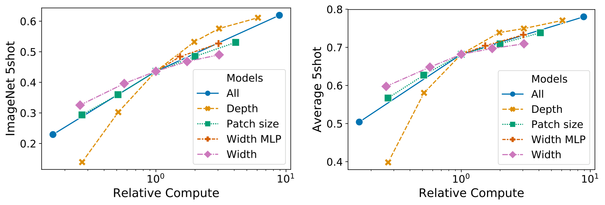
Source: ViT v2 · author-provided figure PDFs; all panels and legends retained. Caption outside image. Click to zoom.
Figure 8。横轴比较不同规模配置的成本，分别看 ImageNet 与五任务平均的 5-shot 表现。交点为 8 层、D=1024、MLP=2048、P=32 的基准，沿深度、宽度、MLP 大小与 patch 粒度调整。
观察与解释。深度扩展收益较大，可见到 64 层，但 16 层后边际收益已减弱；加宽收益较小，减小 patch 稳定提高效果。减小 patch 增加 token 与算力，并非增加 encoder block 参数。投影与位置表参数实际上会随 P 变化，因此原文“without introducing parameters”宜理解为无需扩大主体容量，不是完整模型参数绝对不变。
边界。这是特定训练与 few-shot 配方下的经验，不应变成“现代视觉模型永远优先加深”的普遍定律。
D.3 Head Type and class token
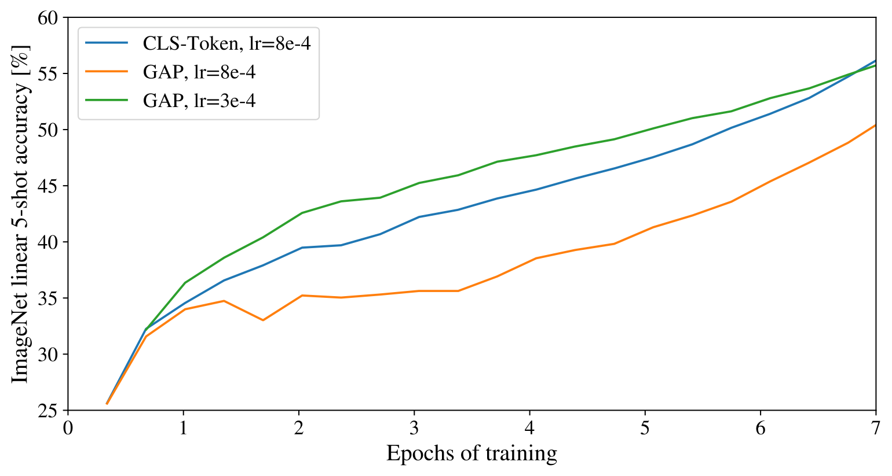
Source: ViT v2 · author-provided figure PDFs; all panels and legends retained. Caption outside image. Click to zoom.
Figure 9 如何读。比较 CLS+MLP 与 patch global average pooling+linear 在不同学习率下的性能。关键在于各方案各自的最佳 LR，而不是只比较同一 LR 下的两点。
结论。GAP 初次表现差是优化设定不匹配；调好 LR 后两者相近。CLS 是方便继承的 readout 接口，不是这篇论文证明不可替代的唯一机制。不能把一次未调参的失败当架构消融结论。
D.4 Positional Embedding
| Pos. Emb. | Default/Stem | Every Layer | Every Layer-Shared |
|---|---|---|---|
| No Pos. Emb. | 0.61382 | N/A | N/A |
| 1-D Pos. Emb. | 0.64206 | 0.63964 | 0.64292 |
| 2-D Pos. Emb. | 0.64001 | 0.64046 | 0.64022 |
| Rel. Pos. Emb. | 0.64032 | N/A | N/A |
Original Table 8 — Results of the ablation study on positional embeddings with ViT-B/16 model evaluated on ImageNet 5-shot linear.
Table 8。数值是 ImageNet 5-shot accuracy 的比例，0.64206=64.206%，而非 0.64206%。No Pos 是 bag of patches；1-D 为 raster 序列每个绝对位置独立向量；2-D 为 X、Y 各 D/2 后拼接；Rel 为 query 内容与相对位置 key 形成额外 logit bias。
算差值。default 1-D 对无位置：.64206−.61382=.02824，即 +2.824 pp；default 1-D 与 2-D 差 .205 pp；所有有位置配置最大与最小差 .328 pp。未给出足够方差，不能把这一小差异当显著优势，更不能据此证明二维位置方案在高分辨率、视频或任意长宽比任务都没价值。
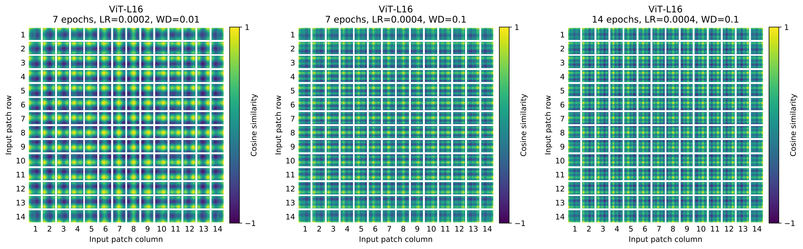
Source: ViT v2 · author-provided figure PDFs; all panels and legends retained. Caption outside image. Click to zoom.
Figure 10。不同超参数训练下的位置相似度图，读取方法同 Figure 7 中部：每个小格选择一个查询位置，再画与全网格的 cosine similarity。空间模式会受超参数影响；观察到类正弦结构不意味着训练时用了固定 sinusoidal encoding。
D.5 Empirical Computational Costs
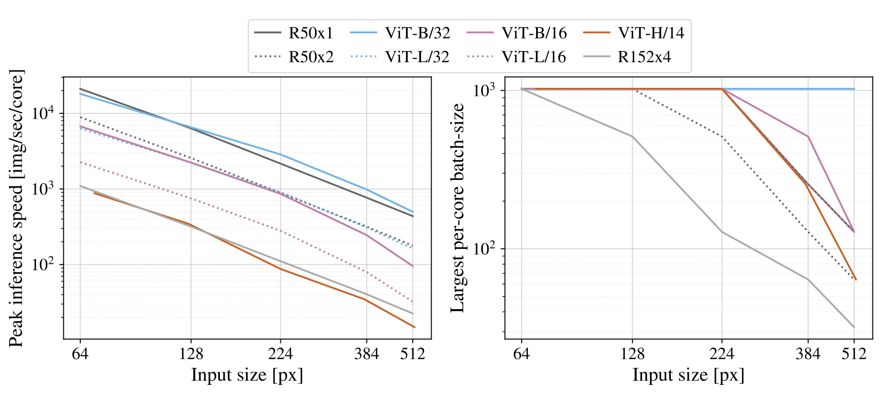
Source: ViT v2 · author-provided figure PDFs; all panels and legends retained. Caption outside image. Click to zoom.
Figure 12。左图吞吐单位 images/sec/core、越高越好，右图是单 core 能装下的最大 batch、越高越好。每个点从广泛 batch-size sweep 中取峰值，所以不是固定 batch 或 batch=1 延迟测量。
含义。论文 TPUv3 上 ViT 和近似 ResNet 的峰值速度接近，大 ViT 的可容纳 batch 较大；在测试范围内，attention 的边长四次项仅在大模型与高分辨率才开始显现。这与前面的“线性层在通常 S 下仍占大部分 FLOPs”一致。
边界。原文称 inference 与 backprop 的速度差是模型无关常数因子，这是作者在该实验中的假定/观察，不能对量化、checkpointing、FlashAttention 或任意端侧平台通用。最大 batch 也不等于同 batch 的物理内存峰值。
D.6 Axial Attention
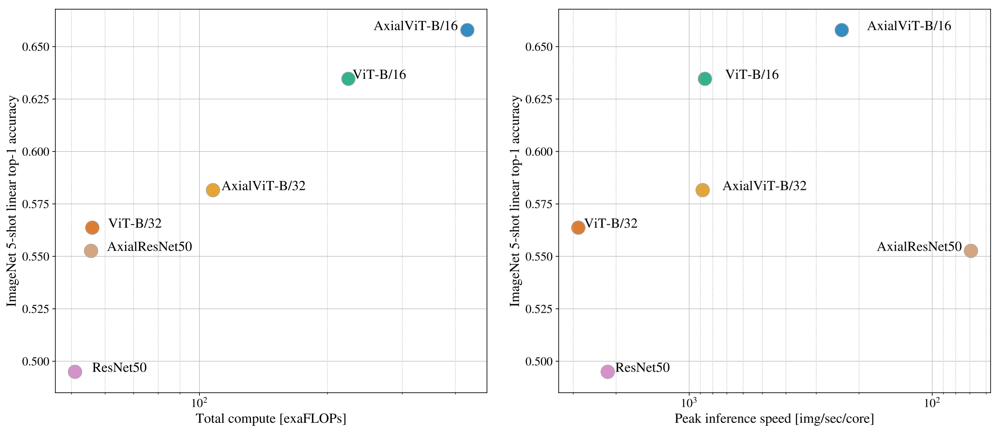
Source: ViT v2 · author-provided figure PDFs; all panels and legends retained. Caption outside image. Click to zoom.
Figure 13 如何读。左边是 ImageNet 5-shot accuracy 对总训练 exaFLOPs；右边是 accuracy 对峰值 images/sec/core，横轴方向和成本图不同。原 caption 把两面都写成“left”，且把右侧称 inference time；本稿保留原 caption 并在此指出：右图实际是 throughput。
机制。作者用 row-attention+MLP，再用 column-attention+MLP 替换一个 global attention+MLP block。attention 的序列变短，但 MLP 多了一份，因此总 compute 不一定更低。
工程意义。Axial-ViT 略提高 accuracy，却付出更多 compute；AxialResNet 在理论 FLOPs 上看起来可行，TPU 上朴素实现极慢。这正好解释为何需要同时审计算子数量、数据布局、加速器 kernel 与真实吞吐。作者复现的是该基线的 accuracy，不是本文进行的复现。
D.7 Attention Distance
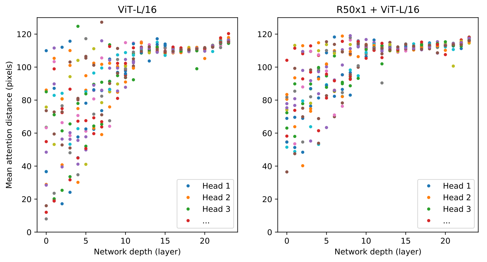
Source: ViT v2 · author-provided figure PDFs; all panels and legends retained. Caption outside image. Click to zoom.
Figure 11。跨 128 张图，按 attention 权重加权空间距离，再按 head、layer 分别统计，每点是一头一层均值，图像宽 224 px。它补充纯 ViT 与 hybrid 的低层行为。
Interpretation。可写为 d_h=mean_(image,i) Σ_j A^h_ij·||p_i−p_j||₂，p 是 patch 空间位置；这只是对统计含义的重构，不是原文新增编号式。CLS 无对应二维 patch 坐标，做空间距离分析必须明确如何排除或处理 CLS，而不能给它虚构一个像素坐标。
低层 head 有不同局部/全局范围，后半段多数扩大；hybrid 的早期局部行为减弱，与 CNN 已先提取局部特征的解释相容，但这仍是观察，不是消融证明。
D.8 Attention Maps
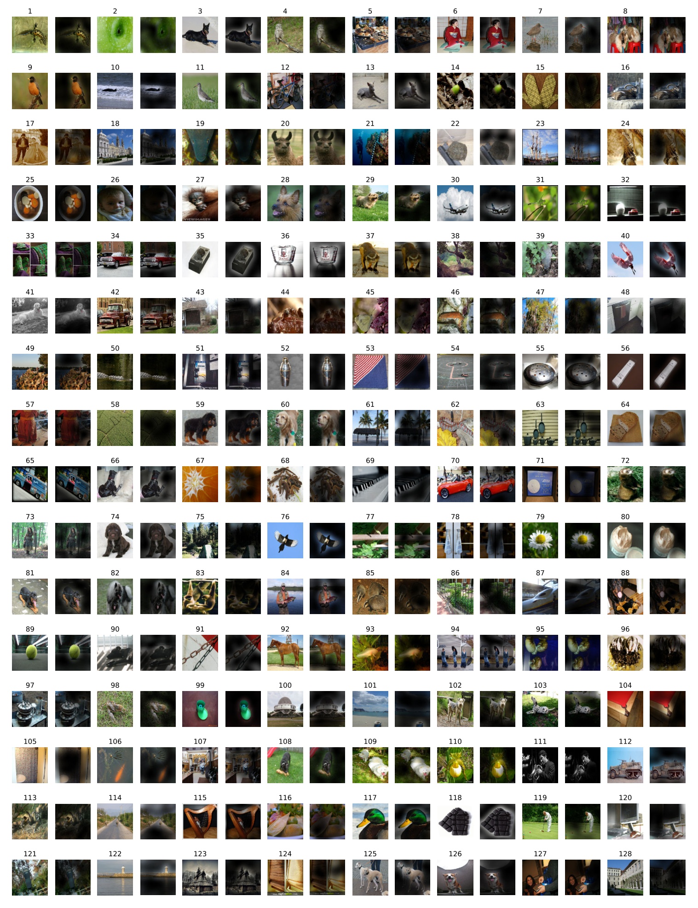
Source: ViT v2 · author-provided figure PDFs; all panels and legends retained. Caption outside image. Click to zoom.
Figure 14。随机选择的更多输入与 rollout map，避免只看 Figure 6 的代表样本。阅读时对照主体、背景、遮挡和不同类别，判断热区是否大体语义合理。
生成机制。原附录写：将 ViT-L/16 的各 head attention 平均，再递归乘各层矩阵，跟踪 CLS 信息如何沿层传播。标准 rollout 还涉及 residual 合并和归一化，本文只把正文明确写出的过程作为论文事实，完整算法应参考 Abnar & Zuidema, 2020。
边界。随机样例比精挑样例更有代表性，仍没有建立 attribution 的定量忠实度。解释图与因果归因应分开。
D.9 ObjectNet Results
Paper。旗舰 ViT-H/14 按 BiT 的 ObjectNet 协议得到 top-1 61.7%、top-5 82.1%。它补充分布变化下的表现，但这里缺少同协议的完整对照矩阵与方差，不足以证明对所有分布偏移鲁棒。
D.10 VTAB Breakdown
| Model | Caltech101 | CIFAR-100 | DTD | Flowers102 | Pets | Sun397 | SVHN | Camelyon | EuroSAT | Resisc45 | Retinopathy | Clevr-Count | Clevr-Dist | DMLab | dSpr-Loc | dSpr-Ori | KITTI-Dist | sNORB-Azim | sNORB-Elev | Mean |
|---|---|---|---|---|---|---|---|---|---|---|---|---|---|---|---|---|---|---|---|---|
| ViT-H/14 (JFT) | 95.3 | 85.5 | 75.2 | 99.7 | 97.2 | 65.0 | 88.9 | 83.3 | 96.7 | 91.4 | 76.6 | 91.7 | 63.8 | 53.1 | 79.4 | 63.3 | 84.5 | 33.2 | 51.2 | 77.6 |
| ViT-L/16 (JFT) | 95.4 | 81.9 | 74.3 | 99.7 | 96.7 | 63.5 | 87.4 | 83.6 | 96.5 | 89.7 | 77.1 | 86.4 | 63.1 | 49.7 | 74.5 | 60.5 | 82.2 | 36.2 | 51.1 | 76.3 |
| ViT-L/16 (I21k) | 90.8 | 84.1 | 74.1 | 99.3 | 92.7 | 61.0 | 80.9 | 82.5 | 95.6 | 85.2 | 75.3 | 70.3 | 56.1 | 41.9 | 74.7 | 64.9 | 79.9 | 30.5 | 41.7 | 72.7 |
Original Table 9 — Breakdown of VTAB-1k performance across tasks.
完整保留。3 个模型 ×19 项任务，加 Mean 列。Natural 是 Caltech101 到 SVHN；Specialized 是 Camelyon 到 Retinopathy；Structured 是 Clevr-Count 到 sNORB-Elev。所有 accuracy 单位为 %。
任务差异。H/14 不是逐项优于 L/16：例如 sNORB-Azim 33.2 对 36.2，Retinopathy 76.6 对 77.1；I21k L/16 的 dSpr-Ori 64.9 还高于 JFT H/14 的 63.3。平均最优不能替代任务匹配。
均值核查。对四舍五入后的 19 个 H/14 数值简单平均为约 77.63，与 Mean=77.6 及 Table 2 的 77.63 相容。Table 9 只有三种 ViT，没有 BiT 逐任务列，不能凭该表重造“所有任务击败 BiT”。
Interpretation：实现迁移、端侧成本与研究判断
官方源码核查：哪些细节直接影响导出？
核对 官方仓库 commit 64801f1，这是阅读日取得的当前实现，不冒充 2021 年原训练版本。
| 文件 / 位置 | 核对结果 | 迁移意义 |
|---|---|---|
| vit_jax/models_vit.py：VisionTransformer | Conv kernel 与 stride 都为 patch size，VALID padding，再 flatten spatial | 与 patch linear 对齐需验证 NHWC/NCHW、kernel 转置和 raster 顺序 |
| Encoder1DBlock | LN→MSA→residual；LN→MLP→residual | 导出时不能挪 LN 到残差之后 |
| CLS / representation | tile CLS 后 concat；可选 representation layer 为 tanh | 不能把 CLS 与位置向量合并后又重复相加 |
| checkpoint.py：interpolate_posembed | CLS 单独保留，平方根恢复网格，zoom order=1 | 先确定旧网格与插值核；矩形输入需要额外网格元数据 |
| train.py | 当前公开微调 cross-entropy 使用 log_softmax | 不能据此认定私有 JFT 多标签监督也必然使用同一 loss |
Loss 重构。分类单标签任务可写 CE=−Σ_k t_k log softmax(logits)_k；多标签 JFT 场景可采用逐类 sigmoid BCE。原论文未完整给出各数据源的 loss 方程与实现，本稿将后者视为任务适配方案，未把它当作已核验原训练细节。
# Interpretation: NHWC pseudocode, omit dropout and biases.
patch = conv2d(image, kernel=E, stride=P, padding="VALID")
tokens = flatten_spatial(patch) # [B, N, D]
tokens = concat(broadcast(cls, B), tokens) # [B, N+1, D]
tokens = tokens + position
for block in blocks:
tokens = tokens + block.msa(layer_norm(tokens))
tokens = tokens + block.mlp(layer_norm(tokens))
features = layer_norm(tokens)
logits = linear(features[:, 0], target_head)
Inference pipeline。decode image→resize/crop/normalize→patch projection→encoder→readout。分类一般只需 CLS，VLM 则常需 patch features，输出选择和位置含义属于接口契约，不能默认拿分类 logits 接语言 projector。
端侧迁移的优先级。先验证像素归一化、patch 顺序、QKV/输出权重排列、LN epsilon 和 GELU 近似，逐层比较浮点、量化、导出结果。误差若在转换后显著放大，应追溯到投影、LN、softmax 与敏感激活的饱和/截断，不把它直接归结为“小模型能力差”。
按算子测性能。分开计预处理、patch projection、QKV、QK/softmax/AV、FFN、projector；检查动态 shape、layout transpose、fallback、临时 buffer 和回调同步。端侧物理内存可结合 CPU VmHWM 与 dma-buf/HTP 分配统计，避免只报文件权重大小。异步 accelerator 调用应在正确完成点计时，否则读到的是 enqueue 时间。
Critique：贡献、限制与隐含代价
| 维度 | 判断 | 证据或待补项 |
|---|---|---|
| Novelty | 架构改动少，规模证据和可复用范式很强 | 承认与 2×2 patch 先行工作的关联 |
| Correctness | 数学接口清楚，结论大体有证据 | “L/16 所有任务更好”、多表 H/14 差值、Figure 13 caption 需纠正 |
| Experiment quality | 多数据规模、多架构、微调/few-shot、实际吞吐都有 | 部分 headline 比较非完全匹配预算、标签与训练配方 |
| Engineering | 主体矩阵运算容易复用，弱视觉结构带来灵活性 | 高分辨率 map、位置插值和 layout/fusion 必须审计 |
| Scalability | 测试范围内具备较好 compute frontier | 不等于无限数据或无限分辨率线性扩展 |
| Generalization | 多分类迁移与 VTAB 有说服力 | OCR、密集任务、长宽比、分布偏移的系统证据不足 |
| Reproducibility | 公开代码与权重帮助迁移 | JFT 私有、完整精度/训练配置/搜索预算不足 |
| Hardware dependency | TPUv3 测时比仅理论 FLOPs 更有价值 | 峰值 batch 吞吐不能外推手机 CPU/NPU batch=1 |
Hidden trade-offs。P 越大，信息粒度越粗；P 越小，视觉细节更丰富，encoder 与语言侧视觉 token 预算更高。分类只监督全局标签，不保证每个 patch feature 都适合 OCR 或定位。统一 backbone 减少架构复杂度，但把质量负担转移给预训练数据、目标和预算。
若我是 Reviewer。希望补充完全匹配图像数/更新步数/训练预算的 CNN–ViT 配对；现代强正则下的 ImageNet-only 对照；位置插值与分辨率对 OCR/小物体的影响；attention map 的因果干预；batch=1 延迟、同 batch 激活峰值、真实 precision 及多硬件测量。本文只提出这些实验，没有伪造结果。
External：技术演进与截至 2026-10-29 的研究
Before / This / After：三个发展的轴
Before。2017 Transformer 为 token 序列提供内容驱动的信息流；2018–2020 的局部、稀疏、轴向 attention 控制视觉像素成本；2020 BiT 证明大规模监督视觉迁移，Cordonnier 等探索 patch Transformer。
This paper。2020 首发、2021 ICLR 的 ViT 用标准 encoder 和较大 patch，将数据扩展作为主要变量。After。路线分成更强训练配方、适合密集视觉的层级结构、多模态目标、视觉自监督与统一/蒸馏编码器。它们没有在所有任务上构成一条单调替代链。
| 工作 | 年份 | 核心思想 | 优势 | 限制 / 与 ViT 的关系 |
|---|---|---|---|---|
| BiT | 2019/2020 | 大规模监督 ResNet 迁移 | 强 CNN 基线与公开迁移实践 | 更强视觉先验；ViT 的主要历史对照 |
| DeiT | 2020/2021 | ImageNet-only 配方、distillation token | 86M reference ViT 达到 83.1%，蒸馏路线最高报告 85.2% | 蒸馏依赖 teacher；不与 ViT JFT 训练成本直接比较 |
| Swin | 2021 | shifted windows + 层级下采样 | 更适合高分辨率与密集预测，固定窗口下随像素数线性扩展 | 引回局部/层级先验，是结构分支 |
| CLIP | 2021 | 400M 图文配对预训练 | 文本定义类别、zero-shot 与多模态接口 | 目标不同，zero-shot 与原 ViT fully fine-tuned 不可同榜 |
| MAE | 2021/2022 | 75% masking，仅编码可见 patch，轻量 decoder | 原报告训练加速≥3倍，I1k-only ViT-H 87.8% | 是新的目标与计算路径，不是 ViT 初步 masked color 的重复 |
| DINOv2 | 2023/2024 | curated data + 自监督规模扩展与蒸馏 | 冻结全局/局部通用表示 | 1B teacher 与训练数据/目标不同，迁移协议需核对 |
| SigLIP 2 | 2025 | 图文目标结合 captioning、自蒸馏、masked prediction、在线筛选 | 多语言、定位、dense features、原长宽比；86M→1B 权重 | 面向 VLM 的任务目标改变，不是换个 ViT 层数 |
| DINOv3 | 2025 | 大规模 SSL、Gram anchoring、蒸馏与后训练 | 维持 dense feature 质量，提供多档 encoder | 7B teacher 不适合直接端侧运行；任务/规模要对齐 |
| EUPE | 2026 | 多 teacher→大 proxy→小 student→多分辨率 | 将不同领域能力汇入紧凑视觉 encoder | 训练教师预算更大；小学生仍有 OCR/深度等取舍 |
Current state：评价维度已经超过 ImageNet top-1
检索截止 2026-10-29。已核对 2025 DINOv3、SigLIP 2 和 2026 EUPE 原始资料及公开仓库。下面取自 EUPE v2 Table 1 的同一评测，是对现有强编码器的受控比较片段，不宣称涵盖所有截至当天的模型，也不把作者的“universal”当成所有任务全球第一。
| ViT-B 编码器 | IN1k zero-shot ↑ | IN1k kNN ↑ | TextVQA accuracy ↑ | POPE F1 ↑ | ADE20k mIoU ↑ |
|---|---|---|---|---|---|
| SigLIP2-B | 78.2 | 83.2 | 51.6 | 85.0 | 41.6 |
| DINOv3-ViT-B | no text encoder | 83.0 | 42.7 | 85.7 | 51.8 |
| RADIOv2.5-B | 74.6 | 81.9 | 47.0 | 84.7 | 49.0 |
| EUPE-ViT-B | 79.7 | 84.1 | 50.4 | 85.9 | 52.4 |
条件。VLM 以 LLaVA-1.5 为协议，只更换视觉 encoder，先用 558K image–text pairs 训练 MLP projector，再用 665K instruction data 更新 projector 与语言模型。patch14 用 336，patch16 用 384，使视觉 token 数均为 576。encoder 家族以 B 档对比，但原训练数据、teacher 和预算不同，不能声称所有上游条件严格匹配。
结论与限制。EUPE 在表列多个指标更好，却在 TextVQA 50.4 低于 SigLIP2-B 51.6（−1.2 pp），NYUv2 原表也弱于 DINOv3（.391 对 .373，越低越好）。“OCR 最好”“dense 最好”“多任务平均好”可能对应不同 encoder。对用户的 OCR/VLM 场景，应把文字细粒度、空间位置、量化后特征和 decoder 接口一起评估。
公开性。SigLIP 2 的官方权重说明、DINOv3 官方代码、EUPE 官方代码均可定位；权重访问与许可按各项目要求，不能把“代码公开”写成无限制商业许可。
最新端侧证据：分辨率必须进入延迟账单
External · EUPE Table 11。iPhone 15 Pro CPU 上的架构延迟：ViT-B 256 为 55.2 ms，512 为 305.2 ms；ViT-S 为 17.1/97.9 ms；ViT-T 为 6.8/38.3 ms。不是 HTP/NPU，不是完整 VLM TTFT，也不是本次测量。
同表 ViT-B 47→216 GFLOPs 是约 4.60 倍，延迟是约 5.53 倍。实际延迟还受 kernel、缓存与形状影响；不要把理论 FLOPs 比直接当 speedup。表中 ViT 参数量与 2021 Table 1 约数相近，模型内部设定和具体导出仍需核对。
My Takeaways / Future directions
我的判断。ViT 的持久价值是一个干净的视觉 token 接口，让架构、预训练目标、语言对齐与 kernel 优化可以独立演进。现代工程的重点已从“是否要纯 attention”转到“保留多少细粒度 token、用什么目标学特征、怎样在设备预算内传给语言模型”。
可验证的下一步。固定 decoder、projector、token 数、输入预处理与评测集，比较 SigLIP2/DINOv3/EUPE 的 OCR 与通用 VQA；用 float→量化→导出逐层误差定位区分能力差距与转换损耗；分别报告 vision latency、projector latency、decoder TTFT/TPOT 与 CPU/accelerator 物理峰值。这样才能把论文的规模洞见迁移成可靠的端侧决策。
References / Related Readings
- Dosovitskiy et al. ViT v2，ICLR 2021；本文主源、全部 14 图/9 表/8 编号式。
- ViT 官方代码与 checkpoints，核对 commit 64801f1b3b367b3611cc27a3d45cc22870a36fb3；模型实现 · 位置插值。
- Kolesnikov et al. Big Transfer (BiT)，2020。
- Cordonnier et al. On the Relationship between Self-Attention and Convolutional Layers，ICLR 2020。
- Abnar & Zuidema. Quantifying Attention Flow in Transformers，ACL 2020。
- Touvron et al. DeiT，2021。
- Liu et al. Swin Transformer，2021。
- Radford et al. CLIP，2021。
- He et al. Masked Autoencoders，2022。
- Oquab et al. DINOv2，2023/2024。
- Tschannen et al. SigLIP 2，2025。
- Siméoni et al. DINOv3，2025。
- Zhu et al. EUPE v2，2026，重点核对 Tables 1/11 与 Appendix C.2。
Related Readings：Transformer：注意力与残差接口 · Layer Normalization：归一化轴与数值路径 · FlashAttention：exact attention 的 IO · SmoothQuant：激活与权重的量化难度。
Related Reading。Llama 3：冻结语言主干的视觉与语音接口 → ViT 编码器、高分辨率 tiles 与 cross-attention 的实际 VLM 数据流，并拆解视觉缓存和 OCR 精度边界。
飞书镜像：完整正文、原图原表与解释图 · 可下载的讲解源稿。
Changelog。2026-10-29：完成 v2 全文与附录精读、两轮内容和排版审校；加入 patch、位置插值与算子成本交互，以及截至阅读日的视觉编码器调研。